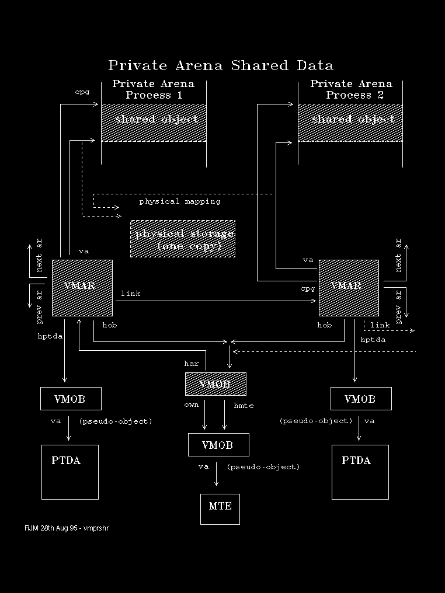

This is the case where .EXE program Read/Only segments are shared across multiple Private Arenas.
The following diagram depicts this situation.
Note that only one VMOB is used, but there are multiple VMARs, one for each process accessing the allocation. Each VMAR is linked using the link field.
Control blocks and data that directly represent the allocation are shown shaded. 